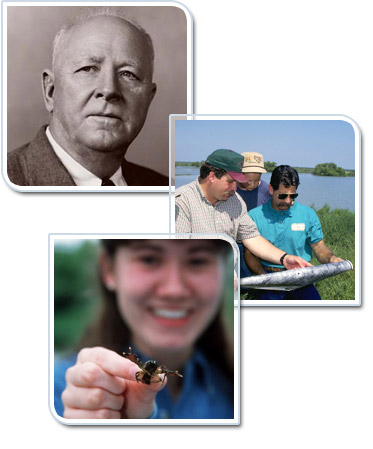

An important part of recruiting is promoting the organization’s mission and conveying its purpose to potential hires in order to find people who are committed to the goals and vision of the agency.
To that end, there are key aspects of the agency that are important for a recruiter to know. These include the agency’s mission, history, organizational culture, and job positions. This lesson will give you an overview of NRCS, which you can then use to orient potential applicants.
This lesson will take approximately 25 minutes to complete.